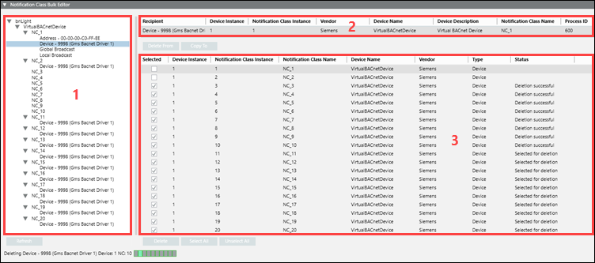

Notification Class Bulk Editor
The Notification Class Bulk Editor allows you to edit multiple notification classes at the same time. Additionally, the editor also allows you to delete recipients that are no longer used, or copy recipients from one notification class to another in the same or in different devices.
A recipient is a device that receives BACnet events, such as alarms and trends, from BACnet objects that have the capability to generate events. A notification class is a BACnet object that contains information about how and where to send the events generated by BACnet objects. The list of devices where the event should be sent is called a recipient list.

Area | Description |
1 | Recipient Selection Area |
2 | Current Recipient Selection Area |
3 | Recipient Operation Area |
Recipient Selection Area
The Recipient Selection Area displays BACnet networks, devices, and notification class recipients.
When you open the Notification Class Bulk Editor expander, the management station finds and displays devices with notification class recipients on the BACnet network. By opening the expander while pressing SHIFT, you can view a collapsed list of recipients. This is helpful if your site has a large number of devices with notification class recipients.
Current Recipient Selection Area
The Recipient column of this area reflects the current selection from the Recipient Selection Tree.
Several attributes display as well, some related to the recipient, and others related to the device hosting the notification class and the notification class itself.
Recipient Operation Area
The Recipient Operation Area is where you select locations (notification classes) that the recipient is deleted from or copied to. You can select individual or all locations.
Button Functions
Button | Function |
Delete From | Once you select a recipient from the Recipient Selection Tree and click Delete From, the Recipient Operation area displays a list of locations (notification classes) where you can delete the recipient. You can select or unselect individual or all notification classes. |
Delete | The Delete button is available once you click Delete From. After making your notification class selections from the list in the Recipient Operation area, clicking Delete removes the recipient from those notification classes. |
Copy To | Once you select a recipient from the Recipient Selection Tree and click Copy To, the Recipient Operation area displays a list of locations (notification classes) where you can copy the recipient. You can select or unselect individual or all notification classes. |
Copy | The Copy button is available once you click Copy To. After making your notification class selections from the list in the Recipient Operation area, clicking Copy adds the recipient to those notification classes. |
Select All | Selects all recipient locations in the Recipient Operation List. |
Unselect All | Unselects all recipient locations in the Recipient Operation List. |